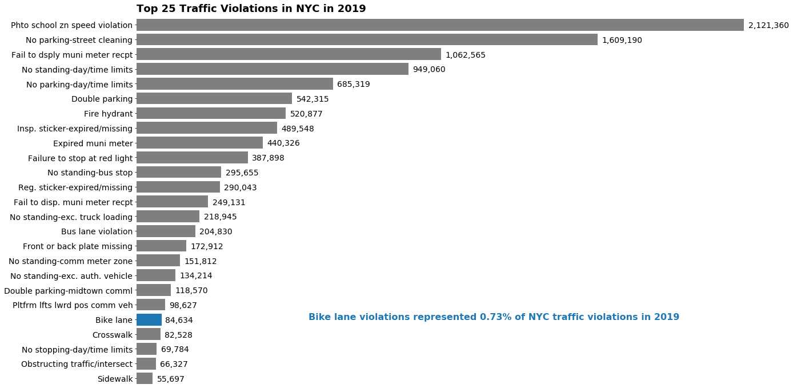
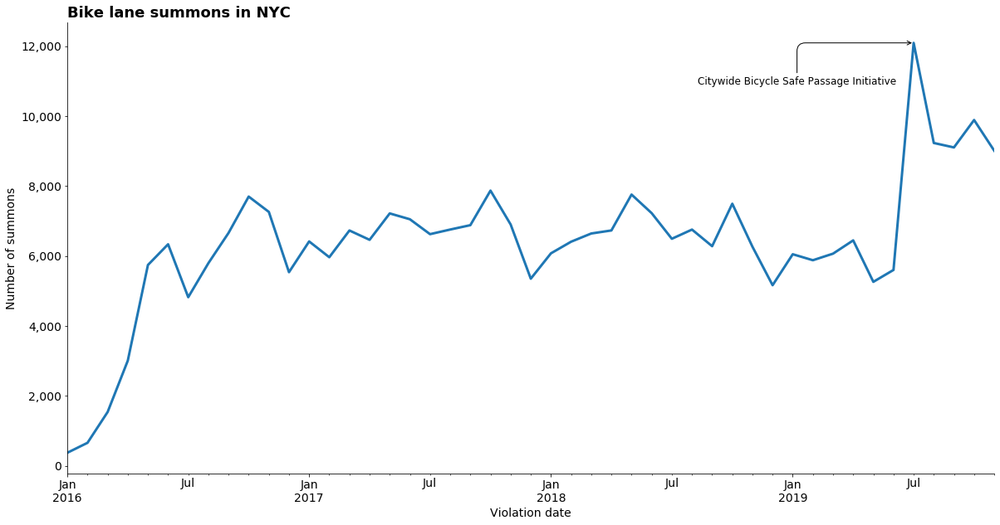
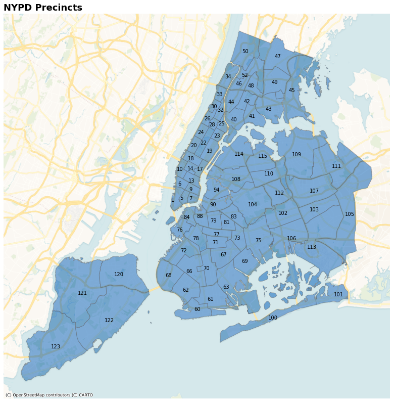
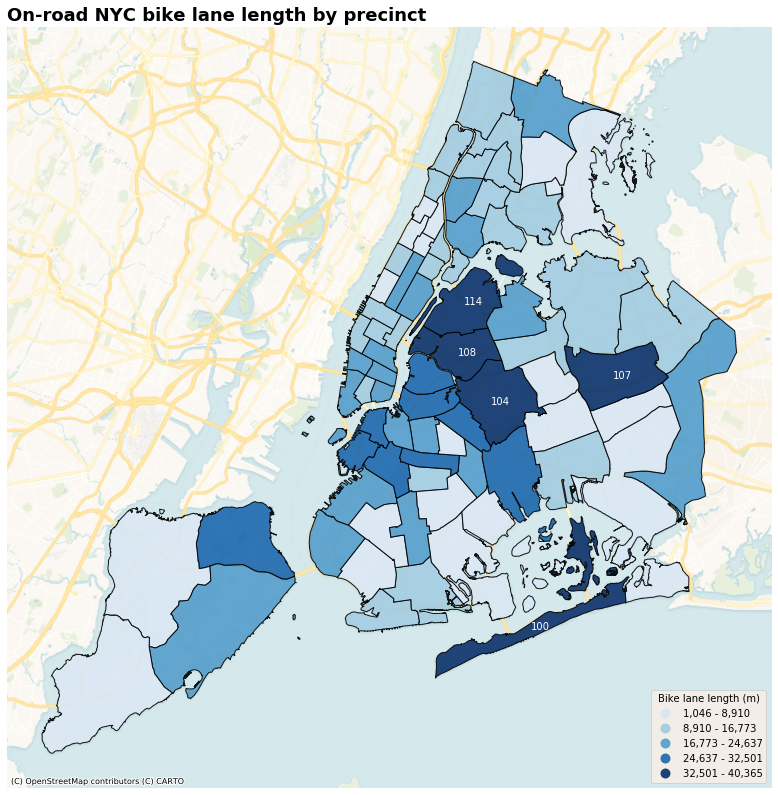
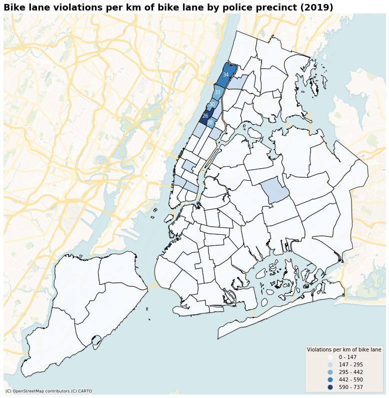
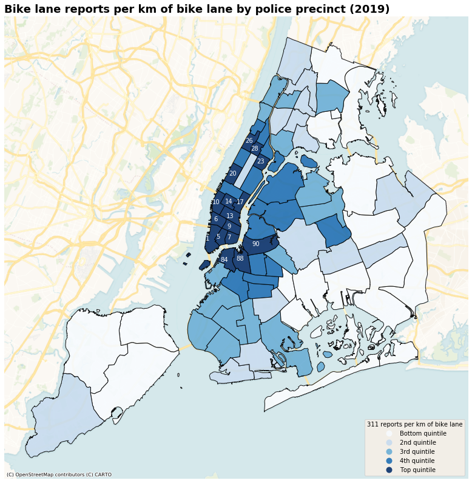

Dude, where’s my car?
Posted on Sun 22 December 2019 in posts
Dude, where’s my car?¶
If you have ever ridden a bicycle in New York City, you know that the answer to the above question is, more often than not, on the bike lane. Every day, when bike-commuting to work, I encounter multiple cars that are parked, stopped, or dropping passengers off on the bike lane, forcing me to veer into traffic (often in roads with heavy traffic). While the law is clear that there should be “No parking, standing or stopping vehicles within or otherwise obstructing bike lanes”, you are more likely to see a police car parked on the bike lane than giving someone a ticket for obstructing the bike lane. It’s (almost) funny until someone gets hurt. And hurt people have gotten.
This year has already seen 27 cyclists lose their lives while biking—a 170% increase from 2018. While there is no single cause that has led to these deaths, it is clear that biking in traffic is more dangerous than riding in a bike lane. The police seems to understand this, as they have been known to give tickets to cyclists who ride off the bike lane, even if they were forced to because a car was blocking the bike lane. However, it often feels like the police do nothing about the cars and trucks blocking the bike lane. I used freely available data to evaluate this problem.

So it appears that bike lane summonses are not given very frequently in NYC. This could be because cars don’t block the bike lanes very often (🤣) or because the law is rarely enforced by the police. If we look at a timeline of the total number of summonses per month for bike violations we get a hint that the correct answer is probably the latter. In the month of July—after 15 people had lost their lives in bicycle crashes—the police finally decided to crack down on bike-lane blocking by more than doubling the number of summonses issued. Obviously, drivers were not breaking the law at double the rate, the only thing that changed was law enforcement.

I decided to look at the data by police precinct, to identify if there are precincts that are doing better than others in policing their bike lanes. To do this, I used multiple datasets to determine the length of bike lane in each precinct, the number of tickets per precinct and the number of complaints to 311 per precinct. To start, here is a map of NYC divided by precinct. There are 77 precincts in NYC, but not all numbers are used, so some precincts have higher numbers. In short, the allocation of precincts is: Manhattan 1 to 34; the Bronx, 40 to 52; Brooklyn, 60 to 94; Queens, 100 to 115; and Staten Island, 120 to 123.

To make a valid comparison among police precincts, it helps to know the length of bike lane within each precinct. I filtered the bike lanes to remove bike lanes that are off-road (such as dirt trails) and so-called ‘bike-friendly parking’, which is not really a bike lane. Below we can see that precincts 100, 104, 107, 108 and 114 in Queens have the most length of bike lane among NYC precincts.

In general, we would expect these precincts (100, 104, 107, 108, 114) to have higher number of summonses—though we also have to consider that heavier traffic in other areas of NYC (looking at you Manhattan) might also lead to higher number of summonses than places with more bike lanes. Below we can see that is decidedly not the case. The chloropleth below shows that the vast majority of precincts have very low numbers of bike lane summonses per km of bike lane within that precinct. (Yes, the metric system is superior to imperial; don’t @ me). In fact, only a few precincts in upper Manhattan fall in the higher range of tickets per km of bike lane. To be clear, this doesn’t mean they are doing a good job—I would not consider 600-700 tickets per km of bike lane in 11 months to be a considerable number—but precincts 26, 28, 30, 33, 34 are doing better than the rest of the city when graded on a curve.

Figure 5 doesn’t necessarily mean that the precincts in mid and lower Manhattan, and Brooklyn are not enforcing the law. Perhaps cars just don’t block the bike lanes in the rest of Manhattan or all of Brooklyn. Common sense tells us this is not true, but I decided to look at 311 complaints and Twitter data from \@Reported_NYC to see where most complaints are coming from and whether the precincts with highest number of complaints issue the most summonses (spoiler alert: they don’t.)

Bike lane blocking is very under-reported (and why wouldn’t it be when nothing happens after reporting it). So instead of plotting the number of reports—which is not very meaningful—I divided the distribution of reports into quintiles and plotted the chloropleth by quintile to get a sense of which precincts have a worse bike-lane blocking problem relative to other precincts.
In Figure 6 we can see that there are three precincts in Brooklyn and thirteen precincts in Manhattan where most 311 reports happen. Comparing these precincts with the precincts in Figure 5, we can see which precincts issue fewer summonses than would be expected by the amount of complaints they receive. For example, we can see that precincts 26 and 28 in upper Manhattan receive a decent amount of reports and issue a relatively high number of summonses. On the other hand, precincts 84, 88, and 90 in Brooklyn and all precincts in lower Manhattan (1-17) are in the top quintile of reports, but issue relatively few summonses—which my experience bike-commuting through the 84th precinct can confirm.
The only precinct that seems to be enforcing the law is precinct 34 in upper Manhattan. It is among the top 5 in tickets per km of bike lane, while being in the middle of the pack in number of reports. This could be because the George Washington Bridge, a very popular biking route, flows into and out of the 34th precinct.
Bottom line¶
Nearly 800,000 New Yorkers ride a bicycle regularly. The NYPD regularly fails to protect these New Yorkers by failing to enforce laws protecting bike lanes, and often even contributing to the problem by parking on bike lanes themselves. It took 15 deaths for the NYPD to even start paying attention to the problem, and 12 cyclists have lost their lives since. Clearly, not enough is being done to achive the NYPD’s mission “to enforce the law, preserve peace, protect the people, reduce fear, and maintain order”.
By looking at NYC’s open data, it is seems that some precincts are doing better than others. In particular, precincts 1-17 (mid and lower Manhattan); 20 & 23 (UWS, East Harlem); 84, 88, and 90 (Brooklyn) have lower ticket rates than would be expected based on length of bike lanes and reports of bike-lane blocking in these precincts.
Note: Thank you for reading. If you want to want to see how these charts were made or want to reproduce my work, you can find it here.